To take account of structure in retrieval in Figure 10.4 , we want a book entitled Julius Caesar to be a match for  and no match (or a lower weighted match) for
and no match (or a lower weighted match) for  . In unstructured retrieval, there would be a single dimension of the vector space for Caesar. In XML retrieval, we must separate the title word Caesar from the author name Caesar. One way of doing this is to have each dimension of the vector space encode a word together with its position within the XML tree.
. In unstructured retrieval, there would be a single dimension of the vector space for Caesar. In XML retrieval, we must separate the title word Caesar from the author name Caesar. One way of doing this is to have each dimension of the vector space encode a word together with its position within the XML tree.
Figure 10.8 illustrates this representation. We first take each text node (which in our setup is always a leaf) and break it into multiple nodes, one for each word. So the leaf node Bill Gates is split into two leaves Bill and Gates. Next we define the dimensions of the vector space to be lexicalized subtrees of documents - subtrees that contain at least one vocabulary term. A subset of these possible lexicalized subtrees is shown in the figure, but there are others - e.g., the subtree corresponding to the whole document with the leaf node Gates removed. We can now represent queries and documents as vectors in this space of lexicalized subtrees and compute matches between them. This means that we can use the vector space formalism from Chapter 6 for XML retrieval. The main difference is that the dimensions of vector space in unstructured retrieval are vocabulary terms whereas they are lexicalized subtrees in XML retrieval.
There is a tradeoff between the dimensionality of the space and accuracy of query results. If we trivially restrict dimensions to vocabulary terms, then we have a standard vector space retrieval system that will retrieve many documents that do not match the structure of the query (e.g., Gates in the title as opposed to the author element). If we create a separate dimension for each lexicalized subtree occurring in the collection, the dimensionality of the space becomes too large. A compromise is to index all paths that end in a single vocabulary term, in other words, all XML-contextterm pairs. We call such an XML-contextterm pair a structural term and denote it by
 : a pair of XML-context
: a pair of XML-context  and vocabulary term
and vocabulary term  . The document in Figure 10.8 has nine structural terms. Seven are shown (e.g.,
. The document in Figure 10.8 has nine structural terms. Seven are shown (e.g., "Bill" and Author#"Bill") and two are not shown: /Book/Author#"Bill" and /Book/Author#"Gates". The tree with the leaves Bill and Gates is a lexicalized subtree that is not a structural term. We use the previously introduced pseudo-XPath notation for structural terms.
As we discussed in the last section users are bad at remembering details about the schema and at constructing queries that comply with the schema. We will therefore interpret all queries as extended queries - that is, there can be an arbitrary number of intervening nodes in the document for any parent-child node pair in the query. For example, we interpret 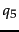 in Figure 10.7 as  .
.
But we still prefer documents that match the query structure closely by inserting fewer additional nodes. We ensure that retrieval results respect this preference by computing a weight for each match. A simple measure of the similarity of a path 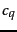 in a query and a path 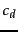 in a document is the following context resemblance function CR:
The final score for a document is computed as a variant of the cosine measure (Equation 24, page 6.3.1 ), which we call SIMNOMERGE for reasons that will become clear shortly. SIMNOMERGE is defined as follows:
The algorithm for computing S IMN OM ERGE for all documents in the collection is shown in Figure 10.9 . The array normalizer in Figure 10.9 contains from Equation 53 for each document.
We give an example of how SIMNOMERGE computes query-document similarities in Figure 10.10 .
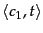 is one of the structural terms in the query. We successively retrieve all postings lists for structural terms
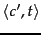 with the same vocabulary term  . Three example postings lists are shown. For the first one, we have
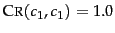 since the two contexts are identical. The next context has no context resemblance with
. Three example postings lists are shown. For the first one, we have
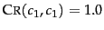 since the two contexts are identical. The next context has no context resemblance with  :
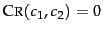 and the corresponding postings list is ignored. The context match of
:
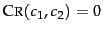 and the corresponding postings list is ignored. The context match of  with 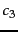 is 0.63>0 and it will be processed. In this example, the highest ranking document is 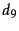 with a similarity of
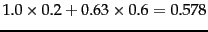. To simplify the figure, the query weight of
is assumed to be 1.0.
with 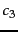 is 0.63>0 and it will be processed. In this example, the highest ranking document is 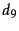 with a similarity of
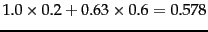. To simplify the figure, the query weight of
is assumed to be 1.0.
The query-document similarity function in Figure 10.9 is called SIMNOMERGE because different XML contexts are kept separate for the purpose of weighting. An alternative similarity function is SIMMERGE which relaxes the matching conditions of query and document further in the following three ways.
atl#"recognition", we also count occurrences of recognition in XML contexts fm/atl, article//atl etc. /play/act/scene/title and /play/title in the document will be merged when matching against the query term /play/title#"Macbeth". These three changes alleviate the problem of sparse term statistics discussed in Section 10.2 and increase the robustness of the matching function against poorly posed structural queries. The evaluation of SIMNOMERGE and SIMMERGE in the next section shows that the relaxed matching conditions of SIMMERGE increase the effectiveness of XML retrieval.
Exercises.
author#"Herbert" occurs once as the child of the node squib; there are 10 squib nodes in the collection;